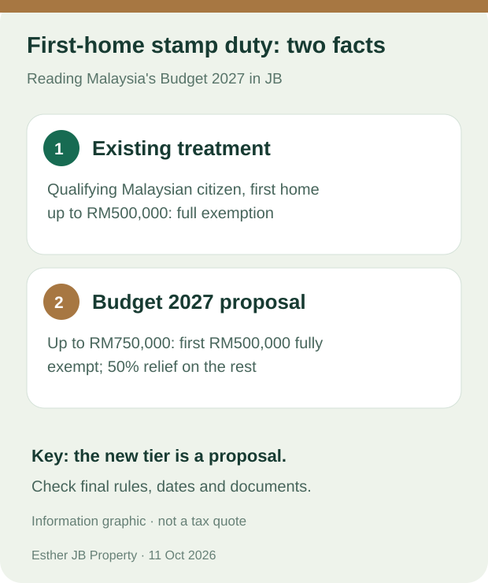

Johor Bahru buyer guide · Sources checked: 11 October 2026
Buying Your First Home in JB After Budget 2027: Should You Wait?
Not necessarily. The first thing to check is your target home's price and the likely date of the sale and purchase agreement. An existing exemption already covers qualifying Malaysian citizens buying a first residential home priced up to RM500,000. Budget 2027 proposes to continue that treatment and introduce a tiered exemption for qualifying first homes priced up to RM750,000. A Budget proposal is not an approval for your own purchase, and it does not change the home's price or guarantee financing. Malaysia Ministry of Finance, Budget 2027 Tax Measures, Appendix 16

Original information graphic based on the Ministry of Finance document checked on 11 October 2026. The proposal is subject to final implementation rules.
What is already in place?
The Ministry of Finance describes the current full stamp duty exemption for loan agreements and transfer instruments on a Malaysian citizen's qualifying first residential home priced up to RM500,000. It lists sale and purchase agreements executed from 1 January 2021 to 31 December 2027. This means a buyer considering a qualifying home within that price range should not assume they must wait for a new 2027 incentive. A lawyer or other appropriate professional should check the actual transaction documents and eligibility before signing. Budget 2027 Tax Measures, Appendix 16
What does Budget 2027 propose to change?
For qualifying first homes priced up to RM500,000, the Budget proposes continuing the full exemption. For qualifying first homes priced up to RM750,000, it proposes a full exemption on the first RM500,000 and a 50% exemption on the portion above RM500,000 up to RM750,000, for the relevant loan agreements and transfer instruments. The proposed period refers to sale and purchase agreements executed from 1 January 2027 to 31 December 2030. The final rules and your specific documents matter; do not subtract a guessed saving from your purchase budget today. Budget 2027 Tax Measures, Appendix 16
How should a JB buyer use this information?
Start with the whole cost, not just the tax threshold. A home priced at RM480,000 and one priced at RM620,000 may have different layouts, travel needs and ongoing costs. Compare the deposit you need, actual financing terms, monthly repayments, management fees if applicable, parking, renovation and ordinary living expenses. The proposed exemption addresses part of a transaction cost; it does not make a more expensive home automatically affordable.
Keep dates and eligibility separate. Viewing a home, reserving a unit and executing a sale and purchase agreement are different events. If you are considering a home above RM500,000, ask the professional handling the transaction to check the final exemption rules before making a commitment based on a projected saving.
Compare the home you will live in. For a new condo, inspect the layout, parking and recurring charges. For a landed home, look at usable space, title documents and expected upkeep. The right home still depends on your budget, daily routes and verified property information.
Budget 2027 also says the Housing Credit Guarantee Scheme (SJKP) will provide up to RM20 billion in guarantees aimed at first-time buyers, particularly self-employed people without fixed incomes. That programme-level figure is not an amount granted to each buyer, a promise of loan approval or a zero-deposit offer. Check eligibility and financing terms with a participating institution. Prime Minister's Budget 2027 speech, paragraph 55
Four questions to ask before signing
- Do I meet the final first-home and citizenship eligibility rules?
- What are the verified property price and expected date of the sale and purchase agreement?
- How will the final rules treat my loan agreement and transfer instrument?
- Can I carry the deposit, monthly repayment and ongoing costs even without an unconfirmed incentive?
If those answers are unclear, make a list of documents and people to check with before deciding.
Want help organising your JB home search?
Tell Esther your budget range, preferred area and expected buying timeframe. We can start by identifying useful viewing questions and the details to verify. You do not need to send identity or bank documents in your first message.
WhatsApp button: Help me plan my first-home questions
Ask Esther
Related reading: Six questions to ask when viewing a new condo in JB · Meet Esther · Budget 2027 first-home FAQ
Sources and review date
- Malaysia Ministry of Finance, Budget 2027 Tax Measures, Appendix 16, pages 22–23
- Prime Minister's Budget 2027 speech, paragraphs 55–56
Checked on 11 October 2026. This guide explains the announcement and a way to compare homes; it does not confirm eligibility, financing, house-price movements or investment returns. Check final implementation rules and the facts of each transaction.